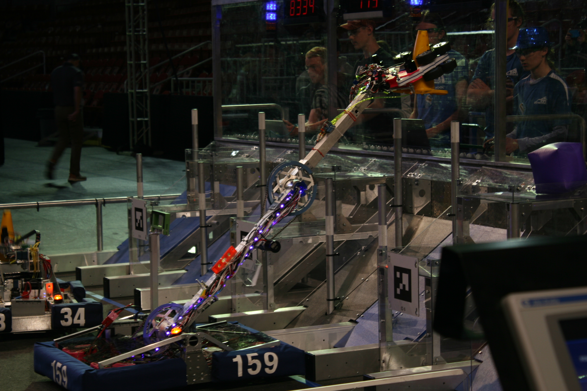

-

Resources
This page collects the references our sub-teams use throughout build season and beyond — CAD files, code repositories, scouting spreadsheets, and onboarding guides for new members. If you're looking for something that isn't listed yet, ask a mentor or a sub-team lead.
Programming resources live in our GitHub organization, CAD assemblies are shared via our team CAD workspace, and scouting data is tracked in a shared spreadsheet during competitions. Links for each of these will be added here as they're finalized.